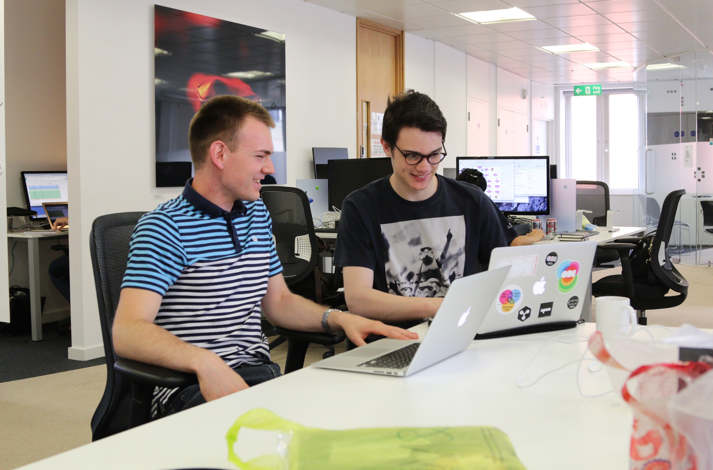
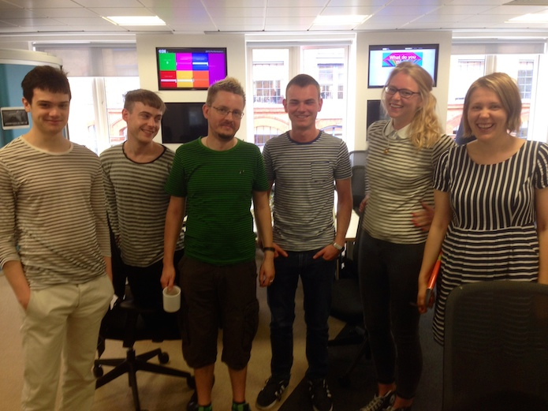

Ben Couston shares his experience as an ODI intern: creating useful apps, meeting 'computing titans' and eating more crisps
 A fellow R&D intern, Daniel, and myself.
My name is Ben Couston. As of the time of writing, I had just exceeded two weeks as a Research and Development software intern at the Open Data Institute. To condense a longer story into a shorter one, a TLDR, my opinion of my time here so far can be summarised like so:
It’s pretty rad.
How I got here
Before I joined the company, I had just finished my second year of a Computer Science degree at the University of Sheffield. But even before starting my second year, I wanted to utilise what I had learnt in a real-world environment for a good cause.
Something people would actually use. Something people would find useful. Something that would, in a larger context, benefit society. I was determined to find such a place to work over the summer, and then I came across the Open Data Institute. The concept of open data resonated exactly with what I was searching for, the belief that certain data should be openly accessible, for the benefit of progressive scientific research, safety, healthcare – an endless list of reasons clearly outweighing the drawbacks. With some programming experience already under my belt I thought “Hey, maybe I’m qualified for this.”
So, I applied. After progressing past the first stage, I went along to an interview, trepidly but somehow assuredly stepping out into the ODI office. Immediately, you get a sense of the work environment, the sense of an easy-going but uninhibited and collaborative atmosphere. With regards to the interview itself, I found myself enjoying it, you can clearly see that people enjoy working here. The 'pods' their interviews take place in are also very space-age.
Ultimately, I found myself being offered the position, which I gladly accepted.
Week one: crisps, Taylor Swift and test-driven development
The stereotype that interns are more waiters than members of the team, a tea machine rather than a worthwhile contributor, was proven false right away.
I discovered through conversations with my line manager, James, that you are not a pawn in the overarching scheme of Lord Business. There is a focus on you as an individual, and what you hope to gain from working at the ODI. My previous impressions about the atmosphere were also confirmed. Things I took particular note of:
{kind=link}
- A vending machine that released snacks based on whether the recession was mentioned recently on news headlines.
- A browser plugin written by a long-standing member of the software team that replaces the words ‘open data’ with ‘Taylor Swift’. Not to mention the Taylor Swift cardboard cut-out overlooking the office. People like Taylor Swift here. A lot.
- An open data board game, that doesn’t destroy friendships and reflects the values of the ODI by encouraging teamwork.
The principles of agile methodology are chivalrously upheld, with every morning beginning with a team-wide “stand-up” meeting when everyone outlines their goals for the day, as well as biweekly sprint meetings.
Even during my first week, on my first day, I was contributing to the company, first working on the ODI’s Open Data Certificates website, a means to assess a dataset’s “openness” and giving it a rated seal of approval, as well as immersing myself in the culture of Ruby on Rails and Github. Small commits FTW.
I also learnt of the importance of test-driven development, a great method for visualising how the data is processed as well as ensuring a certain degree of fidelity and robustness in your application. Lunchtime lectures on Fridays saw outsiders come in and explain how they interpreted open data and how they utilised it for social development, allowing everybody to sit down and consider the larger context of open data and what it is enabling. Most of all I discovered the genuine passion everybody had for open data as a movement.
Week two: taking on our own projects and realising Cucumber tests and byebug are the shiz
The second week marked an important discovery. I was not alone. More software interns had joined the R&D programme, adding to the “army of interns” as we were tagged. The wide variety of backgrounds the interns had reflected the companies open and collaborative attitude. There was also this one time when we all arrived in striped shirts. But we don’t speak of that. Together, we were entrusted with our own project, CSVLint, an application for evaluating the quality of a .csv file, along with an optional schema of metadata.
 There was also this one time when we all arrived in striped shirts...
This clearly exhibited the ODI’s passion for data standards. I learnt that true open data wasn’t just any data that you made available, but data that followed a clear structure and was well-maintained. Also, I don’t know why I didn’t hear about it until recently, but Cucumber tests and byebug are the shiz, I would definitely recommend them to budding Rails developers. Outside of the bubble of software development, events were occurring that reminded us of the wider impact of what we were trying to achieve.
We had the opportunity to attend the Open Data Awards 2015, exhibiting esteemed companies and individuals who demonstrated commendable use of open data. The winners were announced by Sirs Tim Berners-Lee and Nigel Shadbolt. It felt surreal jumping from life as a student to being in the presence of these computing titans.
And now: looking to the future with a new perspective
We have now been split between different tasks. Our independence being thrust upon us, realising that we are not the “new guys” anymore.
Ultimately, the ODI has given me a better insight into what I would like to be doing come the time when I have to start being an adult after my studies, to end this blog, I’ll repeat what I said earlier as I feel it’s accurate. It’s pretty rad here.
Ben Cousten is an R&D Intern at the ODI. Follow @coustonben on Twitter._
If you have ideas or experience in open data that you'd like to share, pitch us a blog or tweet us at @ODIHQ.